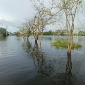
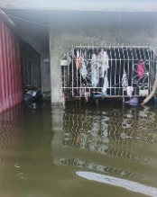
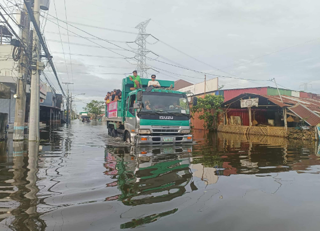

ROBERTO REYES
Noong dumaan ang mga bagyong Crising, Dante, at Emong noong 2025, tunay na pinsala ang idinulot nila sa aming barangay at mga sitio. Tatlong buwan ang lumipas bago tuluyang humupa ang baha, at sa panahong iyon, kinailangan kong itaas ang aming bahay upang maisalba ito. Tanging mga dump truck lamang ang nakakaikot sa mga kalsada. Sa mga panahong hindi pa humuhupa ang baha ay kinailangan kong itaas ang semento sa aming bahay upang maiwasan ang paglubog nito dahil sa tubig. Halos lahat ng bahay dito sa Centro Dos ay ganoon din ang ginawa.

Bilang mga taga-barangay, ginagawa namin ang lahat upang tumulong, lumalabas kami kahit walang life jacket, dala lamang ang aming bota, raincoat, at flashlight. Ngunit sa harap ng tubig na umaabot sa tuhod, madalas naming maramdaman ang limitasyon ng aming kakayahan.

Taon-taon, paulit-ulit ang ganitong sitwasyon. Sa bawat unos, kami ang unang humaharap sa panganib at sa mga hinaing ng komunidad. Ngunit sa kabila ng pagod at kawalan ng katiyakan para sa aming kaligtasan, patuloy kaming naglilingkod sapagkat sa bawat ngiti at pasasalamat ng mga taong aming natulungan, naroon ang dahilan kung bakit sulit ang lahat ng sakripisyo namin.

Isa sa pinakamahirap na bahagi ng aming tungkulin ay ang pagharap sa mga batikos tuwing pamimigay ng donasyon. Bilang mga tagapagpatupad ng batas sa barangay, sumusunod kami sa sistemang itinakda ng pamahalaan. Ito ay ang pamimigay ng ayuda batay sa bilang ng rehistradong bahay. Alam naming may mga tahanang tinitirhan ng higit sa isang pamilya, ngunit bilang bolunteer, wala kaming kapangyarihang baguhin ang patakaran. Sa halip, kami ang unang nakakatanggap ng galit at reklamo mula sa mga mamamayan.